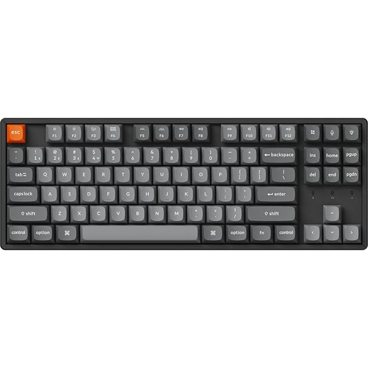
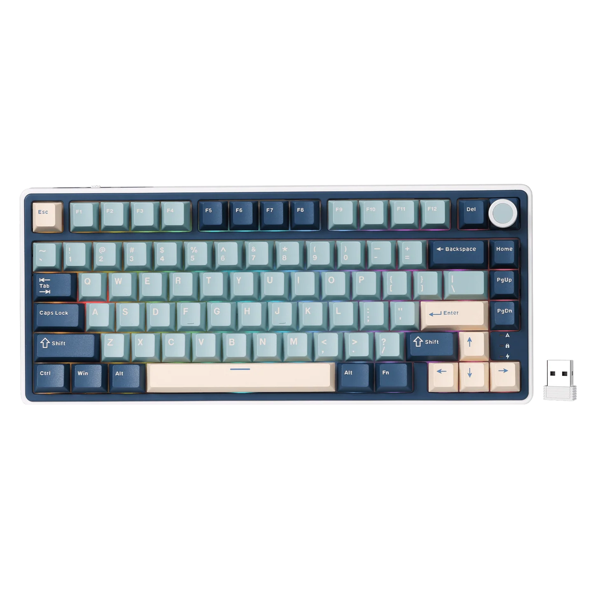
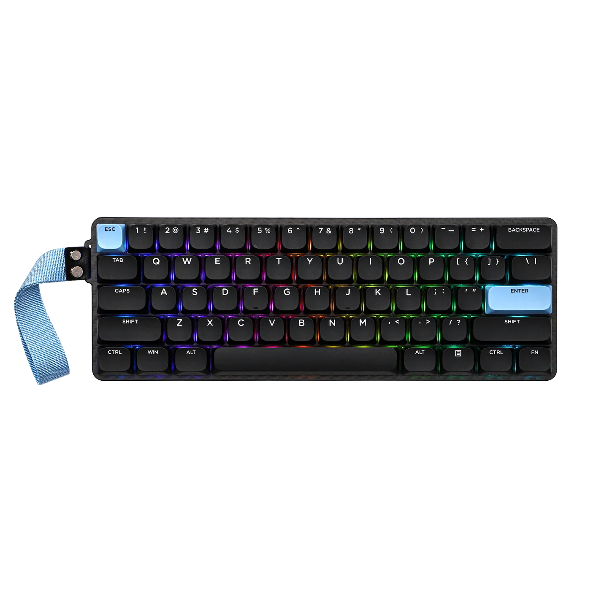
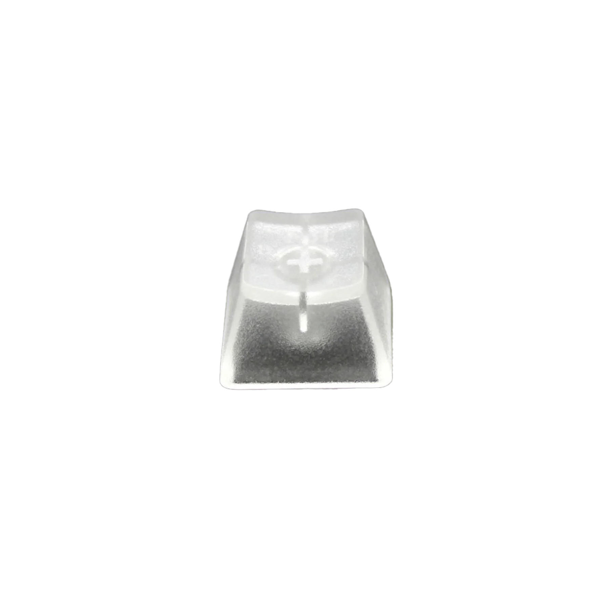
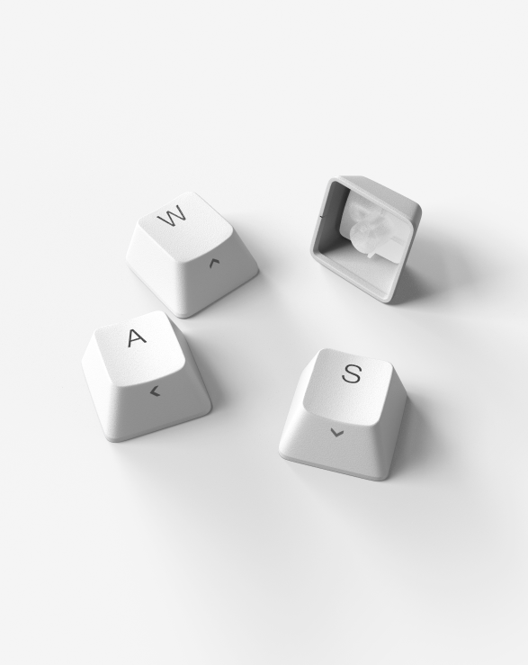
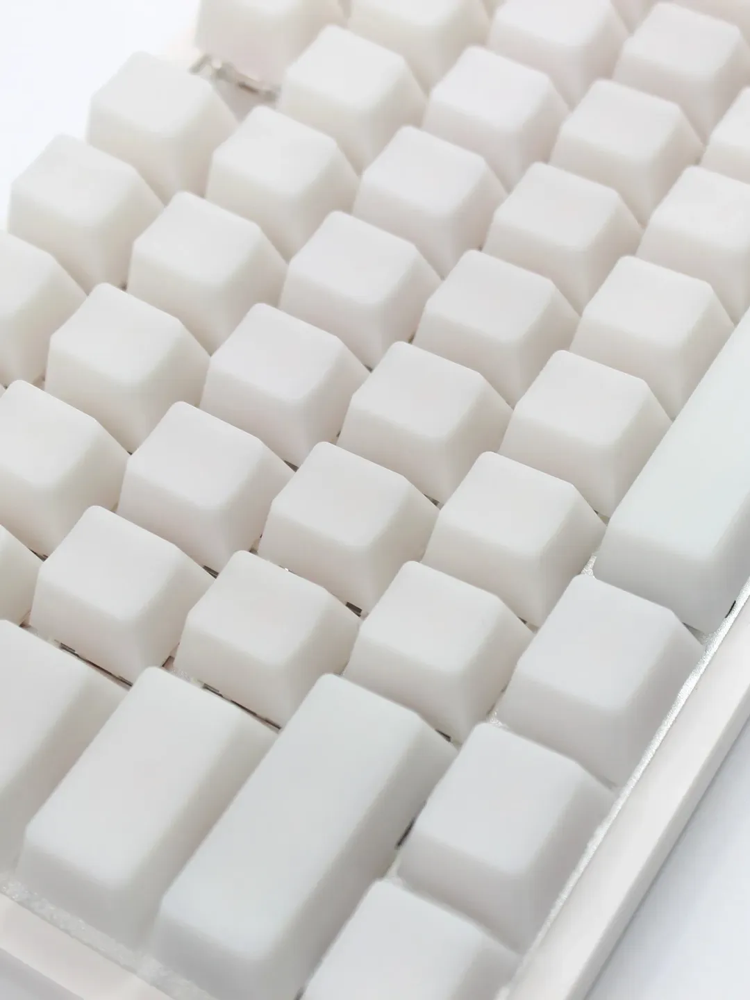
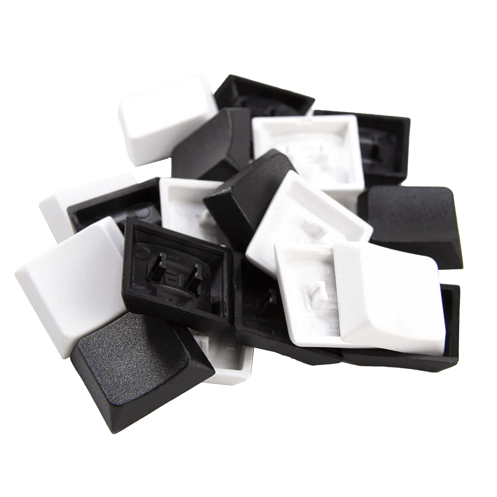

Start exploring our resources and find the perfect keyboard for your needs.Whether you are a beginner or an experienced builder, we have something for everyone.



Each layout has its own advantages and is suited for different types of users. 100% is a full sized keyboard and it reduces in size. Most people go for 60%-75% for the amount of keys on the board and helps with desk space. Choose the one that fits your typing style and workspace requirements.


Keyboard cases provide the structure and protection for your build. Aluminum is more sturdy but pricey, plastic is default and affordable, and acrylic is more for style if you want it transparent. Choose the material and design that fits your aesthetic and functional needs.


Switches determine the feel and sound of your keyboard. Linear is smooth, consistent, and quiet but not silent. Tactile provides a noticeable bump that becomes the in between of linear and clicky. Clicky switches offer both tactile feedback and loud audible click sounds. Silent switches are designed to minimize noise like if you work in an office. Speed switches are optimized for rapid key presses, these are great for gaming. Choose the type that matches your typing preference and/or gaming style.
Some switches come as normal profile and low-profile. Low-profile is like keys on a laptop. While normal profile is like using a regular keyboard for a PC.




Keycaps affect the feel and aesthetics of your keyboard. ABS keycaps are popular for their smooth texture, slight dip on keys, and affordability. PBT keycaps are more durable, resistant to shine, and have a textured feel. Some PBT has straight round caps as well for more style. POM keycaps are known for their smoothness and durability that feels slick. Each material might be different but it also comes down to your design of keycaps as well. Choose the material and profile that suits your typing experience and style.
Not all keycaps support low-profile switches, so read carfully on what switches you purchase if you are using low-profile switches. There are keycaps that are designed for low-profile switches, but not all normal keycaps support low-profile switches.
